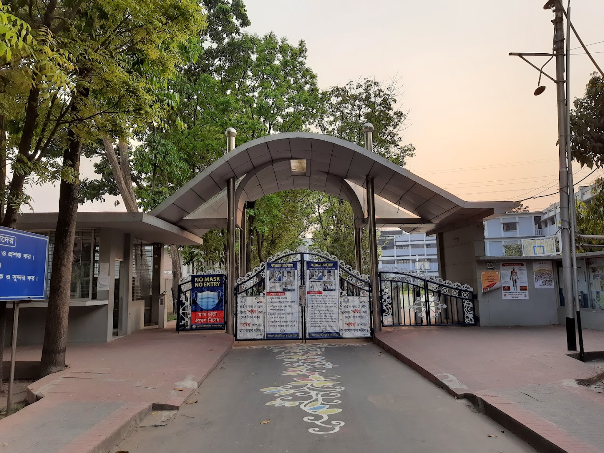
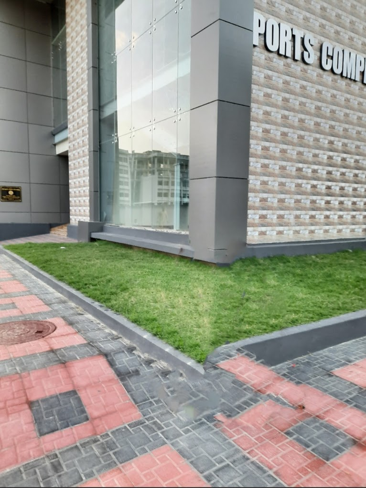

Post office
Its situated Inside Sailor Colony 1, near EPZ thana. Regular postal service though it is in restricted area but anyone can access a good service.
BN School and College
Bangladesh Noubahini School and College, Chattogram, is a private primary, secondary and higher secondary school in Chittagong, Bangladesh, which is run by Bangladesh Navy. It is located at Sailors Residential Area 1, Bandar, Chittagong In 1977, the institute was founded in Chittagong as a junior secondary school of the Bangladesh Navy with only about sixty students. It was upgraded to a high school in 1978, and upgraded to a school and college in 1990.
8 multi storied buildings for sailors of Bangladesh Navy
Bangladesh Navy created 8 multi stored buildings for sailors. Every muliti is closed building Can hold one 118 family. 4 building for PO's rank 3 building for JCO's and 1 for officer. Every floor of building can hold 8 familys, A family can get 3 bedroom, 2 washroom, 1 kitchen and 1 Drawing room.

Sports Complex
The sprawling 85,00 square foot complex features three full-sized basketball courts, an indoor soccer field, a gymnastics center, fitness center with weights and cardio equipment, and a walking/running track that circles the entire facility.
Play ground
The sprawling playground includes climbing rocks, spiral tube slides, swing sets, accessible play elements, and even a poured concrete creek run for experiential water play when activated

Child Park
The children's park is a wonderland of fun for the neighborhood kids. Bright colors and exciting play structures await at every turn. In one corner, a towering multi-level playscape with climbing nets, tubes, and winding slides captures their imagination. Little ones can safely explore the lower padded sections with developmental activities. Across the park, the giant sandbox beckons creative builders to shape and mold the perfectcastle.